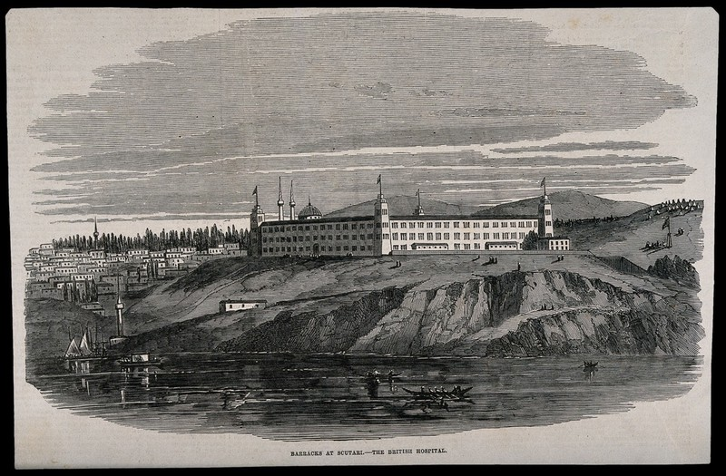

March 28th, the British and French declare war on Russia.
Russia's bombardment of Silistria, Bulgaria begins.
(Badem, 2015)
September 19th, Allied Troops land in Crimea.
Ocotber 17th, the Siege of Sevastapol starts. "It is marked by the Allied navy bombarding the city six times"(Brain, 2023)
Nightingale prepares to go nurse in the war, she has been assured "that the
army was well supplied, but she took the precaution of acquiring food,
medical supplies, linen, clothing and other basic items in Marseilles
en route."
(McDonald, 2010)
Nightingale and 38 other Nurses Travel from England to tend to the wounded. They arrive on November 5th. "On arrival in Scutari the nurses found the army atrociously under equipped medically and lacking in all kinds of essentials, including
food and bedding."(McDonald, 2010)
The Barrack Hospital at Scutari while "magnificent from the outside" was "fatally
deceptive within, cesspools loaded with filth, overflowing toilets and sewer
air blowing into the overcrowded corridors and wards."(McDonald, 2010)
See Picture of Hospital

Nightingale writes to the British Commander, Lord Raglan, regarding the poor medical accommodations in the Scutari hospital. (Tran, 2022)
To learn more about Florence Nightingale's advocacy work head to Exhibit Hall C.
March 18th, the Sanitary Commission’s improvements begin.
(McDonald, 2010)
April 9th, the 2nd bombardment by Allied forces against Sevastapol. (Brain, 2023)
June 6th, the 3rd bombardment of the city of Sevastapol. The Allied forces successfully assault the “White Works”, Mamelon and “The Quarries”, June 8th-9th.
The 4th bombardment of Sevastapol occured on June 17th. (Brain, 2023)
The Sanitary Commision's improvements near completion. (McDonald, 2010)
August 16th, the Battle of Chernaya is fought on the outskirts of Sevastapol. August 17th, the 5th bombardment of the besieged city of Sevastapol. (Brain, 2023)
September 5th, the sixth and final bombardment of Sevastapol by Allied forces. This concludes a year-long siege of the city. September 29th,
"The Russians attack on Kars is brutal and lasts seven hours. They are unsuccessful." (Brain 2023)
"The Ottomans are in desperate need of reserves in Kars as they are running out of supplies. Due to treacherous weather conditions,
reinforcements are unable to reach the garrison." (Brain 2023)
November 25th, Kars is surrender to the Russians. (Brain 2023)
Febrary 1st, preliminary discussion of peaceful terms and conditions begins. "Russia feels pressured by the threat of Austria joining the Allies."
February 24th, the Paris conference begins. (Brian 2023)
March 30th, a peace treaty is signed. "Nightingale
left Scutari for England on July 28th after the last soldiers had been sent
home." (McDonald, 2010)